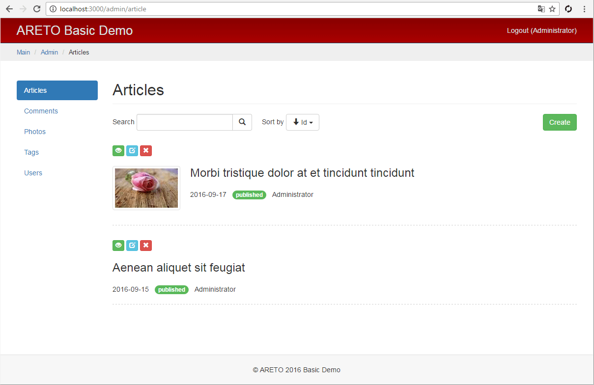
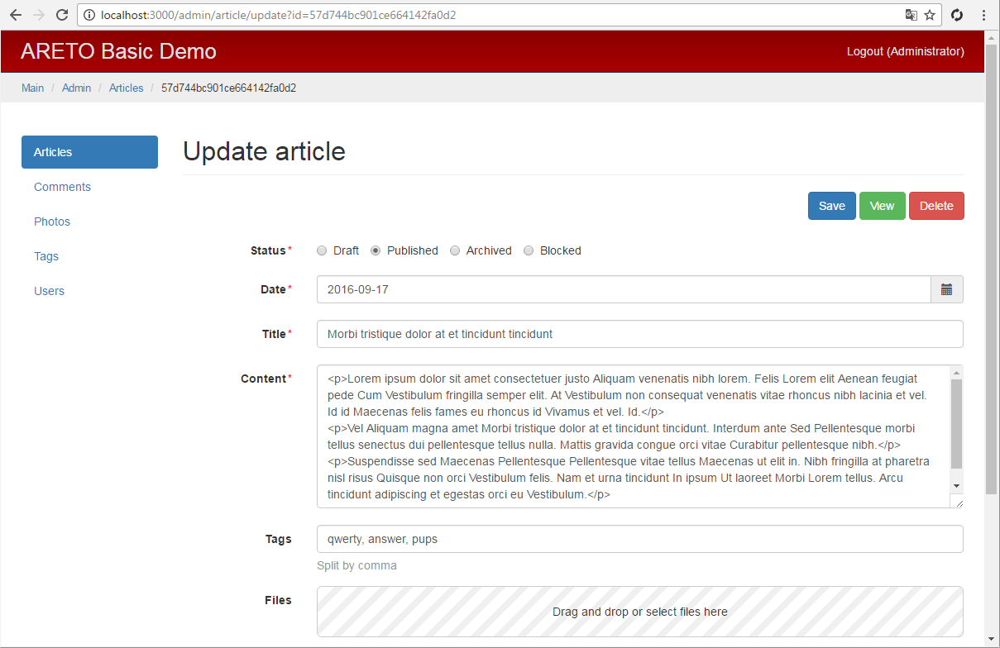

Контроллер статей
Класс ArticleController отвечает за действия с моделью статьи.
module/admin/controllers/ArticleController.js

Метод actionIndex выводит список статей с возможностью поиска и сортировки
по идентификатору, статусу и заголовку. Каждая статья извлекается вместе
со связанными моделями author и mainPhoto, которые необходимы
для представления статьи в списке.
module/admin/controllers/ArticleController.js


Метод actionView выводит объект статьи на просмотр.
Вместе с ним загружаются все связанные модели author, photos, mainPhoto, tags.
Из отношения relComments, через провайдер данных,
формируется постраничный список комментариев, относящихся к статье.
module/admin/controllers/ArticleController.js

Метод actionCreate отвечает за действие по созданию новой статьи.
Атрибут authorId, отвечающий за автора статьи, устанавливается по
текущему пользователю.
module/admin/controllers/ArticleController.js

Метод actionUpdate отвечает за действие по редактированию статьи.
После того как статья найдена, проверяется разрешение для текущего пользователя.
В асинхронный метод can последним аргументом передаются параметры, используемые
для инициализации бизнес-правила доступа.
module/admin/controllers/ArticleController.js